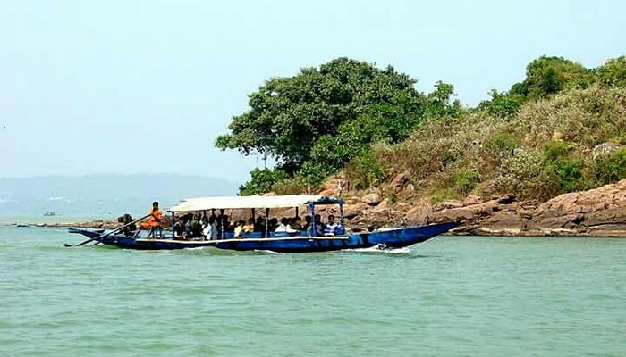

Famous Places
Puri Beach

Puri Beach or the Golden beach is a beach in the city of Puri in the state of Odisha, India. It is on the shore of the Bay of Bengal. It is known for being a tourist attraction and a Hindu sacred place. The beach is the site of the annual Puri Beach Festival, which is co-sponsored by the Indian Ministry of Tourism, the city of Puri
Chilika Lake
Chilika Lake is the largest brackish water lagoon in Asia and second largest coastal lagoon in the world, covering an area of over 1,100 square kilometres (420 sq mi). It is spread over the Puri, Khordha and Ganjam districts of Odisha state on the east coast of India, at the mouth of the Daya River, flowing into the Bay of Bengal.